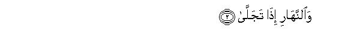
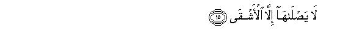
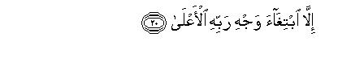
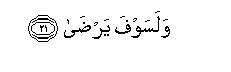

بسم الله الرحمن الرحيم
Sayyid Abul Ala Maududi - Tafhim al-Qur'an - The Meaning of the Qur'an
 92.
Sura Al Lail (The Night)
92.
Sura Al Lail (The Night)
The Surah takes its name from the word wal-lail with which it opens.
Its subject matter so closely resembles that of Surah Ash-Shams that each Surah seems to be an explanation of the other. It is one and the same thing which has been explained in Surah Ash-Shams in one way and in this Surah in another. This indicates that both these Surahs were sent down in about the same period.
Its theme is to distinguish between the two different ways of life and to explain the contrast between their ultimate ends and results. In view of the subject matter this Surah consists of two parts, the first part consisting of vv. 1-11 and the second of vv. 12-21.
In the first part, at the outset it has been pointed out that the strivings and doings that the individuals, nations and groups of mankind are engaged in in the world, are, in respect of their moral nature, as divergent as the day is from the night, and the male from the female. After this, according to the general style of the brief Surahs of the Quran, three moral characteristics of one kind and three moral characteristics of the other kind have been presented as an illustration from among a vast collection of the strivings and activities of man, from which every man can judge which style of life is represented by one kind of the characteristics and which style of life by the other kind. Both these styles have been described in such brief, elegant. and pithy sentences that they move the heart and go down into memory as soon as one hears them. Characteristics of the first kind are that one should spend one's wealth, adopt God-consciousness and piety, and acknowledge the good as good. The second kind of the characteristics are that one should be miserly, should least care for God's pleasure and His displeasure, and should repudiate what is good and right. Then it has been stated that these two modes of action which are clearly divergent, cannot be equal and alike in respect of their results. But, just as they are divergent in their nature, so they are divergent in their results. The person (or group of persons) who adopts the first mode of action, Allah will make easy for him the correct way of life, so much so that doing good will become easy for him and doing evil difficult. On the contrary, he who adopts the second mode of life, Allah will make easy for him the difficult and hard way of life, so much so that doing evil will become easy for him and doing good difficult. This passage has been concluded with a most effective and touching sentence, saying: "This worldly wealth for the sake of which man is even prepared to risk his life will not go down with him into the grave; therefore, what will it avail him after death?"
In the second part also three truths have been stated equally briefly. First, that Allah has not left man uninformed in the examination hall of the world, but He has taken on Himself the responsibility to tell him which one is the straight and right way out of the different ways of life. Here, there was no need to point out that by sending His Messenger and His Book He has fulfilled His this responsibility, for both the Messenger and the Book were present to afford the guidance. Second, that the Master of both the world and the Hereafter is Allah alone. If you seek the world, it is He Who will give it, and if you seek the Hereafter, again it is He Who will give it. Now, it is for you to decide what you should seek from Him. The third truth that has been stated is that the wretched one who rejects the good, which is being presented through the Messenger and the Book, and turns away from it, will have a blazing fire ready for him. As for the God fearing person who spends his wealth in a good cause, without any selfish motive, only for the sake of winning his Lord's good pleasure, his Lord will be pleased with him and will bless him with so much that he will be well pleased with Him.

In the name of Allah, the Compassionate, the Merciful.

[1-11] By the night when it spreads, and the day when it shines forth, and Him Who created the male and the female: In fact, your endeavors (O men) are for different ends.1 So he who gave wealth (in God's Way) and avoided (God's disobedience), and believed in goodness,2 for him We shall facilitate the easy way.3 As for him who was niggardly and lived as though he was independent (of God) and belied goodness,4 for him We shall facilitate the hard way5 And what will his. wealth avail him when he perishes?6



[12-21] Indeed, it is for Us to tell the Way,7 and, indeed, Ours are both the Hereafter and this present life.8 So, I have warned you of the blazing Fire. None shall burn in it but the most wretched one, who belied and turned away. And away from it shall be kept the most pious one, who gives away his wealth in order to purify himself.9 He has received no favor from anyone for which he may have to return a reward. He only seeks the goodwill of his Lord, the Exalted,10 and He will certainly be well-pleased (with him).11
1This is that for which an oath has been sworn by the night and the day, and the creation of the male and the female. It means to say: Just as the night and the day, and the male and the female, are different from each other, and their effects and results are mutually contradictory, so are the aims and objects for which men are endeavoring and struggling, different in their nature and contradictory with regard to their results. In the following verses, it has been told that all these divided endeavors are divided into two main kinds.
2This is the first kind of endeavors, which includes three things, and a little consideration shows that they comprehend all virtues:
(1) That Man should refrain from wealth-worship, but should spend whatever Allah has given him generously in rendering Allah's and His servants' rights, for good works and for helping others;
(2) that he should fear God and refrain from things which cause His displeasure in his moral, social, economic and other dealings with the people;
(3) that he should believe in goodness. Goodness is a comprehensive word, which includes goodness of belief, morals and acts. Goodness of belief means that one should give up polytheism; atheism, and disbelief, and affirm faith in Tauhid, the Hereafter, and Prophethood. Affirming belief in goodness of morals and acts is that one should not be doing good and right merely unconsciously, outside a definite system, but one should acknowledge as right and sound the system of goodness which God has sent, which combines every kind of goodness in all its forms and aspects into a system comprehensively called the Divine Shari'ah.
3This is the result of the first kind of endeavoring and struggling. The easy way implies the way which is in accordance with human nature, which is in accordance with the will of the Creator, Who has created man and the whole _ universe. It is a way in which man has not to fight his conscience, in which he does not have to force his faculties of mind and energies of body into doing works for which they are not given but to do things for which they have actually been given him. It is a way in which man has not to experience war, resistance and conflict on every side, which he has to experience in a life full of sin, but a human society in which at every step he experiences peace and concord, appreciation and honor. Obviously, the person who spends his wealth for public welfare, treats every other person kindly and well, whose life is free from crime, sin and immorality, who is righteous and fair in his dealings, who neither cheats others nor proves false in his promises, from whom no one apprehends dishonesty, injustice and excess, and with whose character no one finds any fault, will in any case be honored and respected in any society, however, corrupt and depraved it may be. Hearts will be attracted towards him in esteem and regard; his own heart and conscience will be satisfied, and he will attain to dignity in society which no immoral person can ever attain. This same thing has been expressed in Surah AnNahl, thus: "Whoever does righteous deeds whether male or female, provided that he is a believer, We will surely grant him to live a pure life in this world (v. 97)", and in Surah Maryam, thus "The Merciful ,will fill with love the hearts of those who believe and do righteous deeds (v. 86). This then is the way in which there is nothing but joy and tranquility for man, for the world till the Hereafter. Its results are not transient and temporary but eternal and everlasting.
Concerning this Allah says "We shall facilitate for him the easy way." It means to say "When after affirming goodness he decides that this way alone suits him, and the evil way does not suit him, and when by making sacrifices and adopting the life of -taqwa practically he proves that he is true in his affirmation, Allah will make easy for him to walk this way. Then, to commit evil will become difficult for him, and to do good easy. When unlawful wealth comes before him, he will not regard it as a good bargain, but consider it a hot piece of burning coal, which he cannot hold in his hand. When opportunities for sin appear before him, he will not rush to seize them as opportunities for pleasure and enjoyment, but will look upon them as gates to Hell and will flee them. The Prayer will not be hard for him, and hem will have no internal peace until he has performed it at its appointed time. He will not feel hurt when paying the zakat, but will regard his wealth as impure until he has paid out the Zakat from it. In short, at every step, Allah will favor him with His grace and help him to follow this way; conditions will be made favorable for him and he will be helped out of every difficulty.
Now, the question arises that in Surah Al-Baled above this very way has been called an uphill road, and hire it has been described as an easy way How can the two things be reconciled? The answer is that before a man has adopted this way, it appears to be a steep, uphill road, for ascending which he has to fight his desires, his materialistic members of the family, his relatives, his friends and those with whom he has social and other dealings, and above all Satan, for each one of them obstructs his way, and makes it seem dreadful. But after man has affirmed goodness and resolved to follow this way, and giving away his wealth in the cause of God and adopting the way of taqwa, has practically strengthened his resolve, ascending the steep road becomes easy and slipping into the abyss of moral depravities becomes difficult for him.
4This is the second kind of human endeavoring, which in every part of it is different from the corresponding part of the first kind. Niggardliness (bukhl) is not merely the niggardliness because of which people generally regard a person as niggardly if he hoards money: neither spends it on himself nor on his children, but bukhl here implies to refrain from spending in the cause of Allah and public welfare. According to this, niggardly is every person who spends generously, rather squanders money, on his self, for his own ease and comfort, interests and enjoyments, but, as. for a good cause, spends nothing, or, if at all he spends anything, ii is for display, or to win a reputation and name, or to have access to officers, or to obtain some benefit and gain. Independence of God implies that one should make worldly, material benefits only the object of all one's endeavors and strivings and being independent of God should least care to see what pleases Him and what displeases Him. As for belying goodness, it is in sharp contrast to believing in goodness in every detail, therefore, it need not be explained here as it has already been explained above.
5This way has been called the hard way, for although the one who follows it, does so for the sake of material benefits, worldly enjoyments and superficial successes, yet while following it he is always at war with his nature his conscience, the laws made by the Creator of the universe and the society in Which he lives. When he transgresses all moral limits of truth, honesty, nobility, purity and chastity and endeavors to satisfy his interests and desires in every way, when the people feel harmed by him rather than benefiting from him, and when he encroaches upon the rights of others and violates people's honor, he feels disgraced in his own eyes and has to clash at every step with the society in which he lives. If he is weak, he has to suffer every kind of punishment on account of his conduct, and if he is wealthy, strong and influential, the world may lie low before him, but no one cherishes any good wishes, any feeling of honor and love for him; so much so that even his associates and companions regard him as a wicked man. And this thing is not only restricted to individuals, even when a strong and powerful nation transgresses the bounds of morality and adopts an immoral conduct, in arrogance of pride and wealth, it earns on the one hand, the enmity of the outside world: on the other, its own society falls a victim to all sorts of crime, prevalence of suicide, intoxication, venereal diseases, destruction of family life, waywardness of the new generation, class conflict and ever-increasing injustice and tyranny. So much so that when it falls from its position of prestige, it leaves nothing behind except curses and condemnation for itself in the history of the world.
As for saying that "We shall facilitate for him the hard ways", it means: He will be deprived of the grace to follow the way of good, gates of evil will be opened up for him, means and resources for the same will be provided for him, doing evil will become easy, and doing good will become toilsome and risky for him. This same theme has been expressed at another place in the Qur'an, thus: "So whomever Allah wills to guide aright, He makes his breast wide open to Islam, and whomever He wills to let go astray, he makes his breast narrow and squeezes it so tightly that ( at the very idea of Islam) he begins to feel as though his soul were climbing up towards the sky." (Al-An`am :125) . At another place it has been said: "No doubt, salat is a hard task but not for the obedient servants." (Al Baqarah: 46). And about the hypocrites it has been said: "When they come to offer the salat, they come reluctantly and they expend in the way of Allah with unwilling hearts." (At-Taubah: 54), and that: "There are such among them, who regard what they expend in the way of Allah as a penalty." (At-Taubah: 98).
6In other words it means that he has to die one day and leave behind in the world whatever he had amassed for his ease and enjoyment. If he did not earn and send forward something for the Hereafter, what would this wealth avail him? He will not take his palatial residence, his majestic conveyance, his property and wealth into the grave.
7That is, Allah as the Creator of man has on the basis of His wisdom, His justice and His mercy, taken of Himself the responsibility not to leave him uninformed in the world, but to tell him what is the right way and what are the wrong ways, what is good and what is evil , what is lawful and what is unlawful, what attitude and conduct will make him an obedient servant and what attitude and conduct will make him a disobedient servant. This same thing has been expressed in Surah An-Nahl; thus: "Allah has taken upon Himself to show the Right Way, when there are also crooked ways." (v.9) (For explanation, See E.N. 9 of AnNahl).
8This statement has several meanings and all are correct:
(1)"That from the world till the Hereafter, you are nowhere beyond Our grasp, for Ours are both this and the next world;"
(2) "that both this world and the Hereafter are in any case under Our sovereignty, whether you follow the way shown by Us or not. If you adopt error, you will not harm Us but only yourselves; and if you adopt the right way, you will not do any good to Us, but will do good only to yourselves. Your disobedience cannot cause any decrease in Our sovereignty and your obedience cannot cause any increase in it;"
(3) "that We alone are Master of both the worlds. If you seek the world, We alone can grant it; and if you seek the well being of the Hereafter, We alone have the power to bestow it too,"
This very theme has been expressed in Al-`Imran: 145: "Whoso makes effort with the intention of the reward of this world, We will reward him in this world, and whoso makes effort with the intention of the reward of the Hereafter, We shall grant him thereof", and the same has been expressed in Ash-Shu`ara: 20, thus: "Whoever seeks the harvest of the Hereafter, We do increase his harvest; and whoever seeks the harvest of this world, We do give him of it here, but in the Hereafter he will have no share at all." (For explanation, see E.N. 105 of Al`Imran, E.N. 37 of Ash-Shura).
9This does not mean that no one will enter the fire except the most wretched one, and no one will be saved from it except the most pious one but the object is to describe the extremely contradictory fate of the two extremely contradictory' characters. One of them is the person who belies the teachings of Allah and His Messenger and turns away from obedience; the other one is the person, who not only believes but also spends his wealth in the cause of Allah sincerely, without any desire for display and reputation, only in order to be regarded as a pure man in His eyes. Both these types of character were present in the Makkah society of that day. Therefore., without mentioning any name, the people have been told that the man of the first type of character only will burn in the fire of Hell and not the man of the second type of character; the man of the second type of character only will be kept away from it and not the man of the first type of character.
10This is further explanation of the sincerity of the pious man. He was not indebted in any way to the people on whom he spends his wealth so that he may be doing so in order to repay for favors received, or may be giving gifts and holding banquets to them in order to further benefit from them, but he is helping such people only in order to seek the goodwill of his Lord, the Supreme. He was neither indebted to them before, nor he expects any favors from them in the future. Its best illustration is the act of Hadrat Abu Bakr Siddiq (may Allah blesshim), He would purchase and set free the poor slaves and slaves-girls who accepted Islam in Makkah and were cruelly treated by their masters on that account. Ibn Jarir and Ibn 'Asakir have related, on the authority of Hadrat 'Amir bin 'Abdullah bin Zubair, that when Hadrat Abu Bakr's father saw him spending money to purchase the freedom of the poor slaves and slave-girls, he said to him: "Son, I see that you are getting the weak people free; had you spent this money on the freedom of strong, young men, they would have become your helpers and supporters." Hadrat Abu Bakr replied: "Dear father, I only seek the reward that is with Allah."
11This verse can have two meanings and both are correct:
(1) "That Allah certainly will be well pleased with him;" and
(2) "that Allah soon will bless this man with so much that he will be happy."